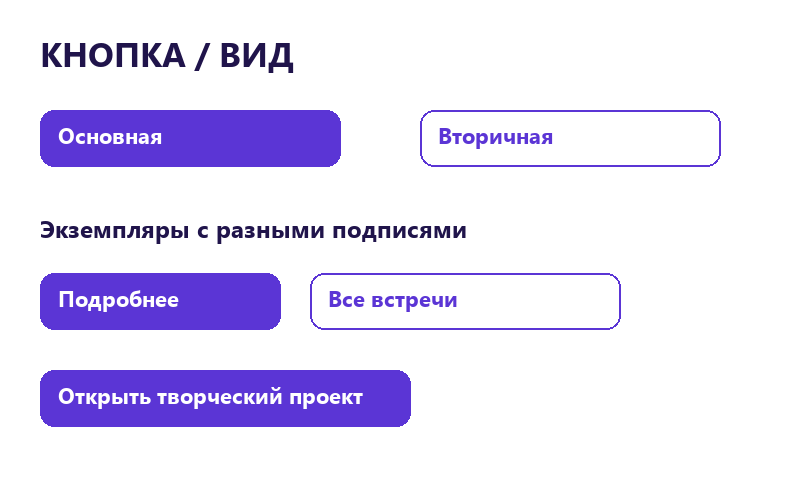
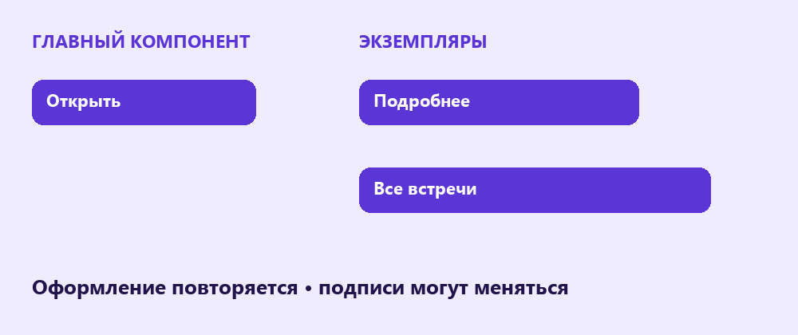
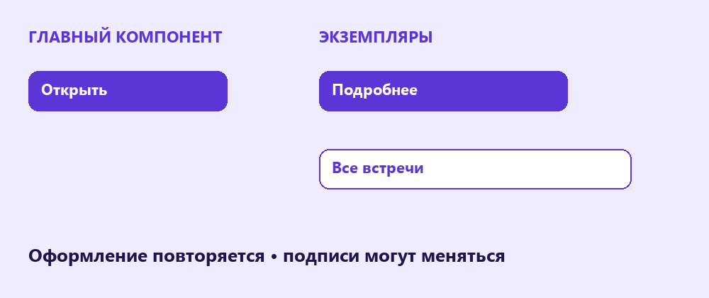

Компоненты и варианты
Сделай повторяемую кнопку, попробуй экземпляры и добавь два варианта оформления для разных действий.
Перейти к заданию ↗
Перед новой практикой
Три небольших вопроса по предыдущему уроку. Выбери ответ и нажми «Проверить».
Клавиши для практики
Сочетания для Windows. Переключи клавиатуру на английскую раскладку. Перед командой заверши ввод текста.
Главный компонент
Component (компонент) - исходный элемент для повторного использования. Создай текст «Открыть», добавь Auto layout, фон и внутренние отступы. Выдели весь контейнер и нажми Ctrl + Alt + K. В Layers появится значок компонента. Назови его «Кнопка».

Кнопка состоит из текста и контейнера с внутренними отступами.
Попробуй в Figma
Экземпляр
Instance (экземпляр) связан с главным компонентом. Перетащи компонент из Assets (ресурсы) на холст: получится экземпляр. Измени Corner radius у главного компонента и проверь копию. Текст конкретного экземпляра можно заменить; это Override (переопределение).

Главный компонент задаёт оформление, а экземпляры могут иметь разные подписи.
Попробуй в Figma
Варианты
Variants (варианты) объединяют родственные компоненты. Сделай второй компонент кнопки со светлым фоном и обводкой. Выдели два главных компонента и нажми Combine as variants (объединить в варианты). Назови свойство «Вид», значения «Основная» и «Вторичная». В экземпляре можно переключать это свойство.

Основная кнопка выделяет главное действие; вторичная поддерживает дополнительное.
Попробуй в Figma
Набор кнопок клуба
Создай набор кнопок клуба с основным и вторичным оформлением. Размести три экземпляра с разными подписями и проверь связь с главным компонентом.
В Figma нажми на название файла и выбери Duplicate to drafts (создать копию в черновиках). Работай в собственной копии. Инструкции и образцы заблокированы.
Проверь свою работу
Отмечай пункты после проверки в Figma.
Если закончил раньше
Добавь третий вариант «Недоступна» с подписью и более спокойным цветом. Это визуальный образец: само оформление ещё не запрещает нажатие в прототипе.